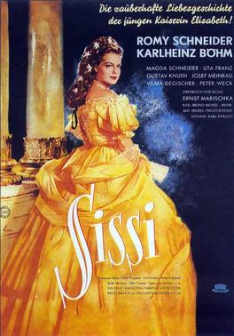
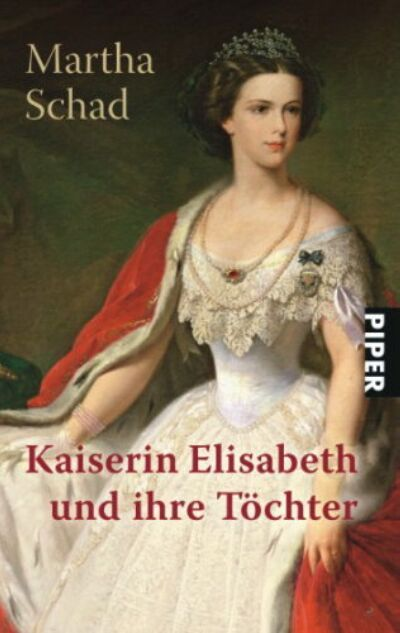

Stage
In 1932 the comic operetta Sissi premiered in Vienna. Composed by Fritz Kreisler, the libretto was written by Ernst and Hubert Marischka, with orchestrations by Robert Russell Bennett. Although the pet name of the empress was always spelled, "Sisi," never "Sissi," this incorrect version of her name persisted in the works about her that followed.
In 1943 Jean Cocteau wrote a play about an imagined meeting between Elisabeth and her assassin, L'Aigle à deux têtes (The Eagle with Two Heads). It was first staged in 1946.
In 1992, the musical Elisabeth premièred at the Theater an der Wien in Vienna. With libretto by Michael Kunze and music by Sylvester Levay, this is probably the darkest portrayal of the Empress' life. It portrayed Elisabeth bringing a physical manifestation of death with her to the imperial court, thus destroying the Habsburg dynasty. The leading role in the premiere was played by Dutch musical singer Pia Douwes. Elisabeth went on to become the most successful German-language musical of all time and has enjoyed numerous productions around the world.
Ballet
In his 1978 ballet, Mayerling Kenneth MacMillan portrayed Elisabeth in a pas de deux with her son Prince Rudolf, the principal character in the ballet.
In 1993 French ballerina Sylvie Guillem appeared in a piece entitled, Sissi, l'impératice anarchiste (Sissi, Anarchist Empress), choreographed by Maurice Béjart to Strauss's Emperor Waltz.
Film
The 1921 film Kaiserin Elisabeth von Österreich was one of the first films to focus entirely on Elisabeth. It was co-written by Elisabeth's niece, Marie Larisch (who played her younger self at the age of 62), and starred Carla Nelsen as the title character. The film later achieved notoriety when a group of con-artists started selling stills from the murder scene as actual photographs of the crime.
Adolf Trotz directed the 1931 German film Elisabeth of Austria.
In 1936, Columbia Pictures released The King Steps Out, a film version of the operetta "Sissi", directed by Josef von Sternberg. It starred opera diva Grace Moore and Franchot Tone.
Jean Cocteau directed the 1948 film version of his play The Eagle with Two Heads. Antonioni's 1981 film The Mystery of Oberwald is another adaptation of the play.
In the German-speaking world, Elisabeth's name is often associated with a trilogy of romantic films about her life directed by Ernst Marischka which starred a teenage Romy Schneider:
·Sissi (1955)
·Sissi — die junge Kaiserin (1956) (Sissi — The Young Empress)
·Sissi — Schicksalsjahre einer Kaiserin (1957) (Sissi — Fateful Years of an Empress)
·Forever My Love is a condensed version, with the three films edited down into one feature and dubbed in English. This version was released in North America in 1962.
In early dramatizations, Elisabeth appears as peripheral to her husband and son, and so is always shown as a mature character. Schneider's characterization of Elisabeth as a young woman is the first time the "young" empress is seen on screen. The trilogy was the first to explicitly depict the romantic myth of Sissi, and ends abruptly with her determination to live a private life. Any further exploration of the topic would have been at odds with the accepted image of the loving wife, devoted mother, and benevolent empress. The three films, newly restored, are shown every Christmas on Austrian, German, Dutch, and French television. In 2007, the films were released as The Sissi Collection with English subtitles. Schneider came to loathe the role, claiming, "Sissi sticks to me like porridge (Haferbrei)." Later she appeared as a much more realistic and fascinating Elisabeth in Luchino Visconti's Ludwig, a 1972 film about Elisabeth's cousin, Ludwig II of Bavaria. A portrait of Schneider in this film was the only one, taken from her roles, which is displayed in her home.
In 2007, German comedian and director Michael Herbig released a computer-animated parody film based on Elisabeth under the title Lissi und der wilde Kaiser (lit.: "Lissi and the Wild Emperor"). It is based on his Sissi parody sketches featured in his television show Bullyparade.
A recent appearance of Sisi was in the new 2012 biopic about Ludwig II of Bavaria titled Ludwig II, where she was played by Hannah Herzsprung.
In December 2014, to coincide with the presentation of the Pre-Fall 2015 'Metier d'arts' collection by luxury fashion house Chanel, shown in the Schloss Leopoldskron palace, creative director Karl Lagerfeld directed a short film featuring Cara Delevingne as Empress Elisabeth accompanied by Pharrell Williams. During a dream sequence, the duo sing a song written by Williams entitled CC the World, playing on the iconic interlocking logo of the fashion house, the initials of its founder Coco Chanel, as well as the Empress's nickname 'Sisi'. Lagerfeld recreated the iconic gown worn by Elisabeth in the portrait by Winterhalter, whilst Pharrell takes on attire similar to Franz Joseph.
Television
In 1974, Elisabeth was portrayed in the British television series Fall of Eagles. Diane Keen played the young Elisabeth and Rachel Gurney portrayed the empress at the time of Rudolf's death.
The 1992 BBC adaptation of Agatha Christie's Miss Marple mystery The Mirror Crack'd from Side to Side centers around the shooting of a fictitious film about Elisabeth. The role of the actress portraying the empress was played by Claire Bloom.
The season five finale of the Austrian detective television series Kommissar Rex (1994) revolves around a deluded woman affected by myth of the empress. The episode, appropriately, is entitled, "Sisi."
A heavily fictionalized version of Elisabeth's younger years is portrayed in a 1997 animated children's series, Princess Sissi.
In December 2009, Sisi, a two-part mini-series, premiered on European television, produced by a German, Austrian and Italian partnership, starring Cristiana Capotondi as Elisabeth and David Rott as Emperor Franz Joseph. Like the 1997 animated series, this film portrays the romantic mythology surrounding the unhappy marriage of Elisabeth and Franz Joseph, but the political problems of the empire and the personal troubles of the main characters are dealt with in much better detail than in many other dramas.
Literature
Constantin Christomanos (1867–1911) who served as Elisabeth's modern Greek language tutor from 1891 to 1893 and escorted her during her stay in Corfu, published his memoirs of her shortly after her death, in his 1899 Tagebuchblätter (Diary Pages). Although he portrayed Elisabeth in an idealistic favourable manner as a fairytale princess come to life, his book greatly displeased the Imperial Court that declared him persona non grata and forced him to resign his University teaching position in Vienna and leave Austria.
The story of Elisabeth is told in Susan Appleyard's ebook, In a Gilded Cage.
Elisabeth's youth and early adult life are dramatized in the novel Imperial Waltz by William S. Abrahams (Dial Press, 1954).
Elisabeth appears as a significant character in Gary Jennings' 1987 novel Spangle. The novel concerns a circus traveling through Europe at the close of the 1800s, and portrays Elisabeth's interest in circuses and daredevil riding.
Her story inspired the 2003 children's book The Royal Diaries: Elisabeth, The Princess Bride.
The empress appears in the romantic fiction novel Stars in my Heart by Barbara Cartland.
Appears in Alexander Lernet-Holenia's novel Mayerling (1960).
She appears in a cameo in the short story "The Road to Charing Cross" in the book Flashman and the Tiger by George MacDonald Fraser (1999). She dances with the anti-hero, Harry Flashman at a ball at the end of the story, in which Flashman has helped prevent her husband the Emperor from being assassinated.